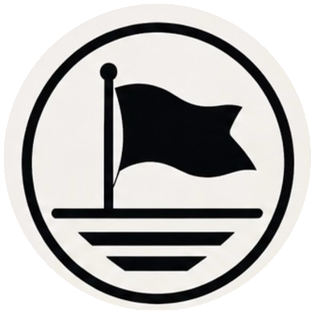

# Iron Square — field-estimating ship plan **Chartwright 8.8.20.34 · Design IS-DESIGN-1 · PLANNED, NOT COMMISSIONED** ## Admiral’s intent Create a practical salesperson’s tool for exterior-material quote requests. Start with siding, then extend to roofing and brick/block foundations. Connect evidence, verified measurements, material quantities and the estimate revision so a person can explain every number. Improve the fleet’s reusable commissioning process rather than requiring a custom ChatGPT build for each new business. **Iron Square is a working product name.** No trademark, domain or business-name clearance is claimed. **Chartwright** is the unique name of this software update, not a replacement for an existing business. No estimating vessel, account, paid service or production entitlement is created by this plan. ## Class, ownership and authority Recommended design: an **Admiral-owned Fleet Core business vessel**, with an appointed Captain and exact-vessel salesperson access. Ownership is distinct from a platform role. Owning a business does not by itself make it an Admiral Program; **Bootstrap Build stays an Admiral Program outside Fleet Core**. The earlier suggestion used those categories interchangeably; this plan deliberately separates them. Final commissioning class/name remain an Admiral decision. Before making any new identity, inspect and reconcile any existing **HouseHull** draft by its exact identifier. Do not rename, abandon, replay or clone a pending operation to make the new name appear. Preserve all existing ships and their histories. Neither existing VoyageKeeper operation is to be retried. ## First useful release: siding The first objective is one complete, explainable siding takeoff—not three unfinished trade calculators. A salesperson starts from the requested quote. Capture the job address and contact details with permission, customer needs, request time and assigned salesperson. Front, back, left and right photos accompany the quote request when available; later photos retain their source and capture time. Allow detail photos and a manual miscellaneous line. The opening screen should offer **My estimates / New estimate / Needs measurements**, not fleet diagnostics. A focused path moves through **Job → Photos → Measurements → Openings & trim → Materials → Review**. Every step has Back and Continue; leave does not submit, lose approved revisions or switch ships. Use the same readable buttons, boundary-space cleanup and explicit save feedback established in Ike’s. ### Measurements and photos Label each elevation front/back/left/right and each section with an enduring ID. Record measured width/height, rectangular/triangular shape, units, source, measurement time and verifier. Support feet and inches without changing stored precision unexpectedly. Convert units in the calculation layer, not by editing historical records. A photograph is evidence, not automatically a scale. Do not promise accurate dimensions from four uncalibrated images. Require field dimensions or a verified reference for the measured plane; record perspective/occlusion limitations. An AI suggestion remains **Needs verification**. A missing side is marked **Not supplied** and keeps the job incomplete where it prevents a required quantity. Customers need not perform technical measurement entry; the salesperson records/approves it. Doors and windows belong to a specific elevation and section. Retain count, width, height, opening type and chosen trim option. Reject negative sizes, impossible deductions and unassigned openings. Deduction rules are explicit and product/work-method dependent; never silently subtract every opening and assume offcuts are reusable. Separate area deduction from the linear trim it creates. ### A complete materials scope Include siding, starter, inside and outside corners, window/door trim, finish pieces, flashing where applicable, nails/fasteners and the user’s miscellaneous additions. Store the selected product, profile/exposure, usable coverage per piece or package, stock lengths, manufacturer rule revision and source. Include pieces/packages, not just square feet. Product-specific fastener requirements and substrate/installation conditions must be resolved before claiming a complete nails list. Missing rules show **Needs product rules**, not zero material. Waste is visible and configurable per relevant material. Round purchasing units once after applying the documented waste/coverage rule. Explain whether offcuts, opening deductions and accessory allowances are included. A packaging total is not the same as a measured installed area. Do not apply area waste a second time when converting already-adjusted area to packages. ### Calculation examples (specification only) 1. A chosen test wall of 40 × 10 ft is 400 sq ft gross. Two 3 × 5 ft windows and one 3 × 7 ft door deduct 51 sq ft under this fixture’s full-deduction policy, leaving 349 sq ft / 3.49 squares. At the fixture’s 10% waste, purchase coverage is 383.9 sq ft. At a synthetic 200 sq ft per pack, round up to 2 packs. This does **not** include corners, trim or nails; those remain separately measured/rule-driven lines. 2. A 30 × 10 ft rectangle plus a triangle of base 30 ft and rise 6 ft is 390 sq ft gross. Two 3 × 5 ft windows give 360 sq ft net; 10% fixture waste gives 396 sq ft and 2 synthetic 200-sq-ft packs. These are internally checked design fixtures, **not execution of an implemented estimator**. The 10% and 200-sq-ft values are not manufacturer or buying recommendations. The future product must reproduce these examples and independently test its real catalog rules. ### Labor, price and approvals Allow per square, per square foot, per linear foot, per opening, per item, per crew day and manual lines. Separate material quantities, material costs, labor, other charges and selling price. Make tax/fees/discount assumptions explicit for later jurisdiction-specific review; this plan supplies no tax advice or crew rates. Approval locks the estimate revision’s measurements, product rules, quantities, prices and assumptions. Later rate changes create a new revision; they do not reprice an approved quote. A quote is not a payment or a ledger sale. Any Admiral service fee needs its own agreed terms and explicit activation; there is no automatic fee merely because the ship exists. ## Later trade modules **Roofing:** separate roof planes, measured versus projected area, pitch, hips/ridges, valleys, eaves/rakes, openings and roof-specific accessories. Never multiply a measured sloped surface by pitch again. A photo lacking a visible plane cannot prove its dimensions. Underlayment, starter, cap, flashing and fasteners follow selected-product rules. No instructions require unsafe roof access. **Foundations:** measured wall faces/runs and height, brick/block choice, nominal unit coverage, openings, corners, waste and surface finishes. A materials takeoff is not structural design, an engineering approval or code certification. **Assisted imagery:** evaluate aerial, drone or computer-vision providers only after checking licensing, consent, cost, location coverage and a measured accuracy benchmark. Start with manual measurement and photos so the useful first release does not depend on a paid image provider. ## Reusable technical contract — proposed, not migrated Each estimate/revision/photo/line is bound to immutable **vessel_id + estimate_id + revision_id** where appropriate. Client addresses never grant access. Candidate tables: estimates, estimate_revisions, elevation_sections, openings, material_rule_snapshots, takeoff_lines, media_references and audit_events. These names describe a design; no database tables or migrations are added here. Use private vessel-scoped object storage for quote photos, with expiry-controlled authorized reads and explicit retention. Do not put photos, addresses, email links, passwords or private reports in public GitHub assets. Test/private preview can be ephemeral, but the interface must disclose whether photos have been saved, queued locally or discarded. Camera capture must not require saving a copy to the iPad Photos library. Explicit writes have operation identifiers and reconcile uncertain outcomes. Reload, navigation, reconnect and authentication never replay saves or commissions. Server functions verify authenticated user, exact vessel and intended revision on every protected request. No hidden global Captain role. Admiral observation/export is scoped, read-only by default and auditable; operating is a separate authority. Stage the new ship through existing **server prepare → one deliberate commit → independent canonical read-back**. Verify its saved blueprint, then appoint the selected Captain, require acceptance and prove own-vessel allow/other-vessel deny. Commissioning creates a private test vessel, not a customer launch. Do not auto-invite an email or activate paid integrations from this plan. ## Acceptance matrix before field or paid use | Gate | Required evidence | Status now | |---|---|---| | Measurements | Units, triangles, openings and invalid-input tests; measured field comparison | Planned | | Materials | Product coverage, trim lengths, fasteners, waste, rounding; missing-rule holds | Planned | | Write integrity | One command per action, explicit uncertain-result reconciliation; immutable approved revision | Planned | | Permissions | Own/foreign direct API reads and writes; owner/Captain/salesperson boundaries | Not certified | | Revocation | Approved revoke → denied session → deliberate restoration | Not run | | Durability | Saved photos/revisions, export, backup and restore under isolated test data | Not built | | Fleet independence | No cross-vessel customer, media, brand, ledger or pricing contamination | Required | | Admiral oversight | Exact-vessel report, timestamp, export and traceable recommendations | Required | | Field use | Real iPad Safari startup, camera/paste/refresh/offline transitions | Not tested | | Commercial launch | Service terms, role handoff, availability and approved scope | Blocked | ## Execution order for the fleet **1. Finish Ike’s navigation proof.** Upload Chartwright, sign in as the existing authorized owner, open active orders, view one saved order and return with filter retained. Preserve 26 browser-local records; a secure login is not a cloud backup. **2. Reconcile before commissioning Iron Square.** Approve class/name and any prior HouseHull draft outcome. Review a dry-run commissioning preview. No command is authorized by merely opening this document. **3. Build one siding sample from request to internal takeoff.** Finish the quantity audit, accessories and missing-input holds before adding roofing. Review the written implementation plan before its executable work. Test with synthetic projects and photos before real customer data. **4. Carry proven controls fleet-wide.** Reuse exact-vessel navigation, input cleanup, readable status/report age, intentional writes and recoverable state. Preserve Ike’s A/B production geometry, normal logos, existing pricing and ledger history. Do not transfer business data or financial obligations between ships. ## Tools and boundaries The present release needs no new subscription. Node/Python, browser regression tools and archive/hash checks are used locally. GitHub is reported installed, but its repository actions were not exposed in this conversation’s tool list; no repository or CI operation is claimed. The fresh Supabase read-only request was blocked; no workaround or privilege broadening was attempted. For the next quality step, consider a **real-iPad Safari test service such as BrowserStack Live/Automate** with a synthetic test account. It can expose browser-specific behavior the isolated Chromium tests do not prove. A GitHub Actions test job could gate future uploads/merges; it requires separately approved repository setup. Supabase project-scoped read-only access is preferable for routine audits; write access stays deliberate. Tool availability and pricing require confirmation before any purchase or account connection. ## Official technical references These inform the recommended tool capabilities, not the truth of Black Flag’s deployment or a product measurement guarantee. Checked October 18, 2026. - Playwright supported engines and WebKit/Safari distinction: https://playwright.dev/docs/browsers - Real-device website checks: https://www.browserstack.com/docs/live - GitHub build/test automation: https://github.com/features/actions - Supabase project-scoped and read-only MCP configuration: https://supabase.com/docs/guides/ai-tools/mcp - GitHub browser upload limits: https://docs.github.com/en/repositories/working-with-files/managing-files/adding-a-file-to-a-repository

Admiral’s build brief
BLACK FLAG · CHARTWRIGHT8.8.20.34 TEST
Prepared October 18, 2026
Prepared October 18, 2026
Steady footing. A defined next ship.
Chartwright.
Keep Ike’s work moving. Preserve the fleet’s authority boundaries. Give the next estimating ship a buildable plan—not a premature launch claim.
PLANNED · NOT COMMISSIONEDPlanning document only. No live records, account actions or operating authority. This page can be public; it is not a secure Admiral workspace.
Open the work.
Keep the owner verified.
The server’s vessel namespace and the browser’s storage namespace have different jobs. Both stay tied to the same verified owner and exact business; they no longer have to be identical strings.
The complete owner navigation code is preserved from SureFoot, apart from this release’s labels. Expired, changed-account, wrong-vessel and revoked/missing-membership cases remain held.
Today → OrdersExact order detailBack with filter retained
First three iPad checks
Proof before departure.
- Upload the small Chartwright update.
Supports Workhorse .32 or SureFoot .33. Keep the other repository files. - Open Ike’s existing owner session.
Confirm 8.8.20.34. A fresh session may need sign-in; no password reset or Local Recovery. - Open active orders, view one, return.
No login bounce for a valid session; the saved wording and search remain. Do not edit orders or rates.
Next vessel · working name
Iron Square
Field-ready exterior takeoffs. A salesperson’s workspace after a quote request: photos, verified dimensions, openings, trim and material quantities kept together in a traceable estimate revision.
Recommended class: Admiral-owned Fleet Core business vessel, subject to final approval. Ownership is separate from program classification. Bootstrap Build remains an Admiral Program. Reconcile any existing HouseHull draft first.
FIRST: SIDING
Finish one useful trade.
Front / back / left / right photos; measured walls and gables; doors and windows; trim options; siding, accessories, nails and miscellaneous lines.
A photo does not automatically supply scale. Missing measurements or product rules must create a visible hold—not an invented complete takeoff.
LATER: ROOFING + FOUNDATIONS
Extend the measured model.
Roof planes and slope basis; brick/block faces and nominal unit coverage; configurable labor modes. Aerial or vision assistance follows a measured accuracy and cost review.
No paid image dependency, customer launch, structural certification or global Captain role is added by this release.
JobPhotosMeasurementsOpenings & trimMaterialsReview
Entire fleet · protected course
Preserve what works.
Prove what is still open.
Keep intact
Existing vessels, local orders, species rates, A/B production geometry, normal logos, report history, the owner/Captain/Admiral distinction and both closed commissioning operations.
Browser-local business records are not magically a cloud backup. Do not clear Safari website data. Auto-retry stays forbidden.
Before live handoff
Direct server permission denial tests, deliberate revocation/restoration proof, private photo storage, backup restore, scoped Admiral exports and a complete customer-to-production workflow.
Native iPad acceptance is still required for the navigation repair. A fresh live database check was blocked; no new server audit is claimed.
Tools · scope before access
No new subscription required for this ZIP.
Use the local code and browser regressions plus package/identity checks already available. The most useful next improvement is real iPad Safari testing, paired with a repository test gate—not broader blanket database permission.
- Real-device Safari testing. BrowserStack Live/Automate is an option to review for synthetic test accounts; no purchase or connection has been made.
- GitHub test automation. The plugin is reported installed, but repository actions were not exposed here. A separately approved Actions workflow could run checks before release.
- Project-scoped read-only Supabase inspection. Preserve explicit approval for writes. Tool approval and actual database read-only restrictions are different protections.